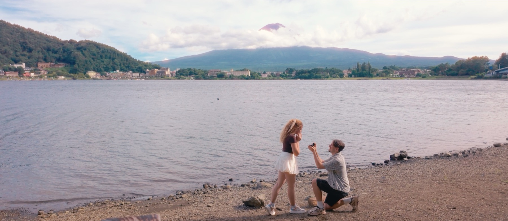
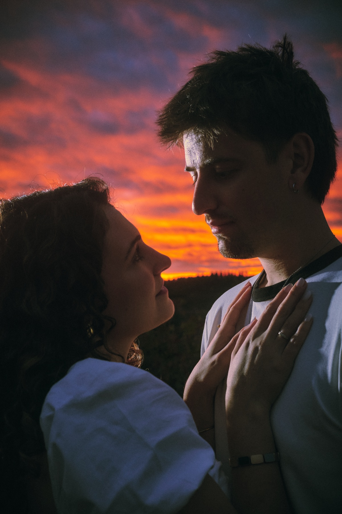
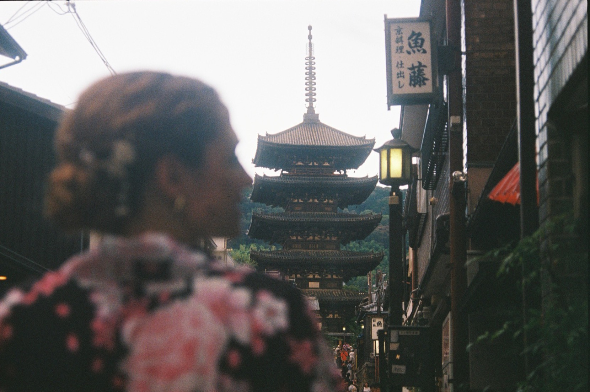
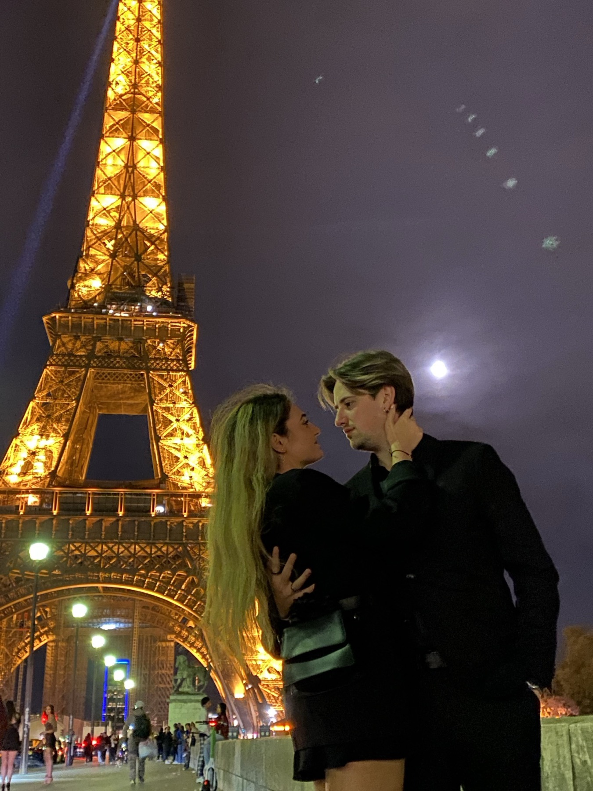
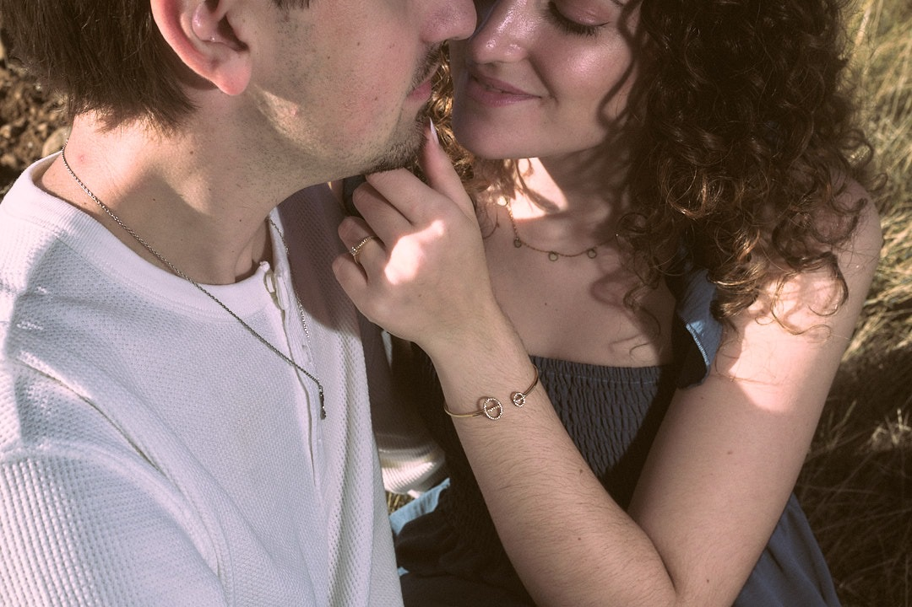
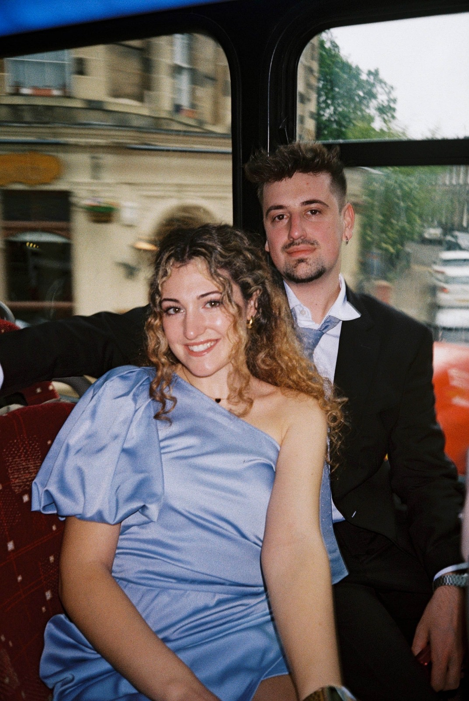
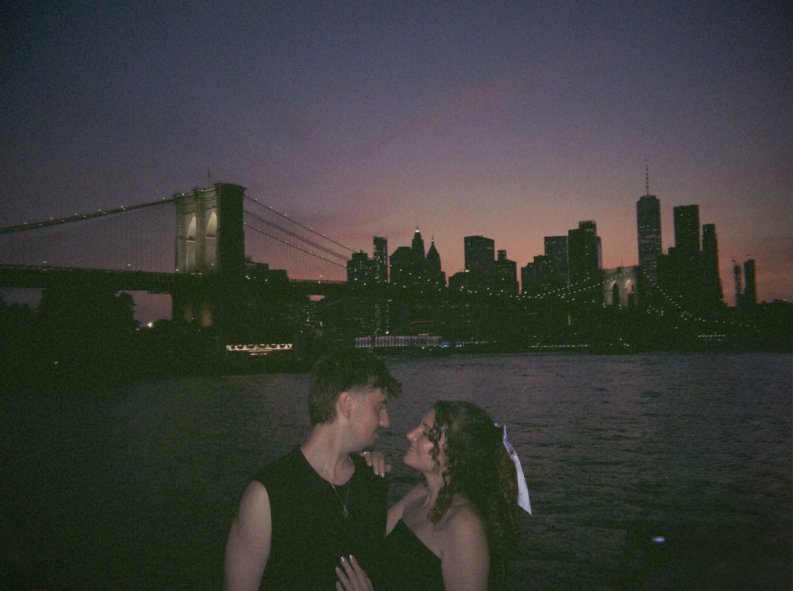
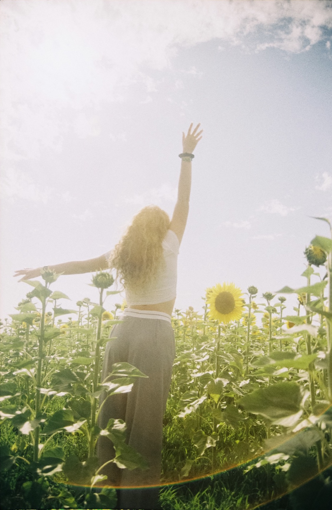

29 · 10 · 2016
El hilo aparece
Un cumpleaños, un amigo en común y dos personas que habían vivido siempre en la misma ciudad sin cruzarse. Aquella noche nos conocimos.
Nos casamos
Un hilo rojo nos unió en 2016.
El 17 de julio lo atamos para siempre.
Logroño · La Rioja
Cuenta una leyenda japonesa que las personas destinadas a encontrarse están unidas por un hilo rojo invisible, atado al dedo meñique.
El hilo puede estirarse, enredarse o tensarse durante años. Puede cruzar ciudades y océanos. Pero nunca se rompe.
En japonés, musubi significa atar, unir. Esta es la historia de nuestro nudo.
29 · 10 · 2016
Un cumpleaños, un amigo en común y dos personas que habían vivido siempre en la misma ciudad sin cruzarse. Aquella noche nos conocimos.
02 · 08 · 2017
Hicieron falta casi diez meses para que el hilo tirase de verdad. Un 2 de agosto empezamos a escribir esto juntos.
2017 — 2025
Desde Logroño lo hemos ido estirando por todas partes, y en cada lugar se quedó un pedacito de nosotros.
17 · 07 · 2025
Raúl lo tenía todo pensado: la orilla del lago Kawaguchiko, con el monte Fuji al fondo. Durante semanas revisó cada día cómo de visible estaba la montaña, y cada día la encontraba escondida tras las nubes.
Aquella mañana, al llegar a Fujikawaguchiko, seguía oculta. Pero al salir de comer, de camino al lago, las nubes se apartaron y el Fuji apareció para nosotros. Allí, frente a él, Raúl le pidió a Judy que se casara con él.

17 · 07 · 2027
Y ahora, rodeados de las personas que queremos, atamos el hilo para siempre.
17·07·25
Lago Kawaguchiko, Japón
Le pidió que se casara con él.
17·07·27
Logroño, La Rioja
Nos casamos.
Dos años exactos después, el mismo día. No lo vemos como una casualidad, sino como el hilo recordándonos dónde empezó todo.
17:00 h
Ermita Virgen de los Parrales
Baños de Río Tobía, La Rioja
A continuación
Bodegas y Viñedos del Marqués de Vargas
Logroño, La Rioja
Muy pronto
Os contaremos aquí cómo vestir para el gran día.
21:45 h · entre viñedos
Nos gustan las cosas pequeñas: el sol en la cara un día de frío, el silencio de un atardecer, ese rato en que el tiempo parece detenerse.
Cuando el sol se esconda tras los viñedos, nos encantaría pararlo todo un momento y verlo caer junto a vosotros.
Nos encanta hacer fotos de lo que a priori es sencillo y normal. Para nosotros, esos instantes son para siempre.







El 17 de julio, vuestras fotos también serán parte de la historia. Muy pronto os contaremos cómo compartirlas con nosotros.
Todos los asistentes deben confirmar rellenando el formulario.
Nos haría muy felices que formaras parte de este nudo. Confírmanos tu asistencia antes del 17 de junio de 2027.